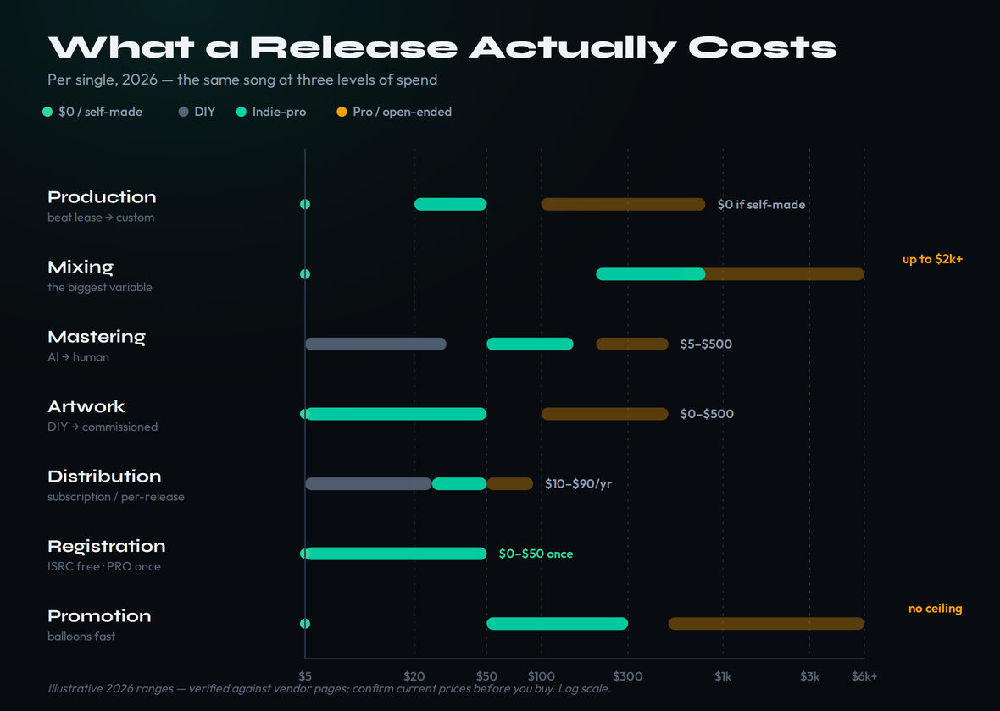
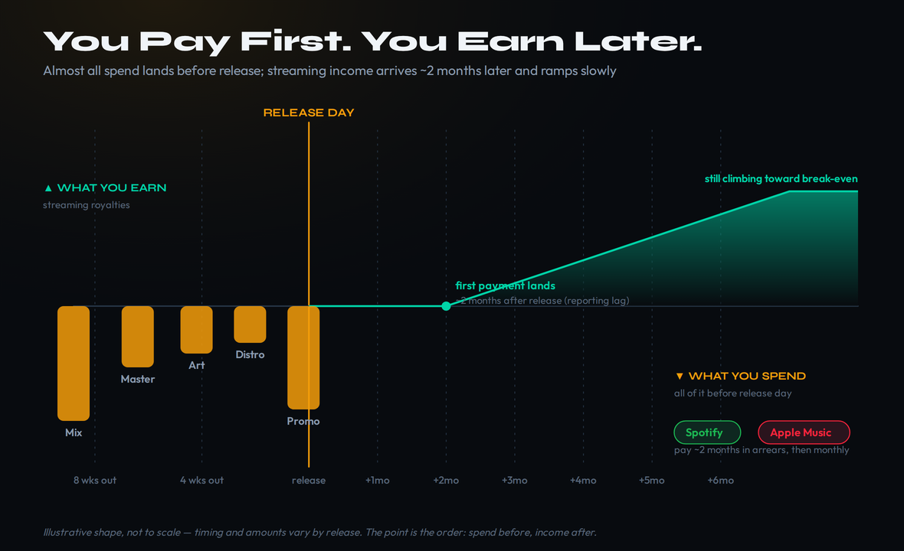
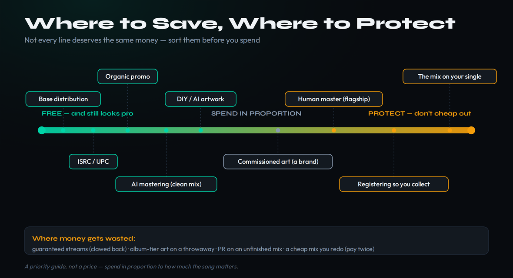

There is no single number for what it costs to release a song, and any guide that hands you one is selling you something. What there is — and what almost nobody lays out honestly — is a budget ladder: a stack of line items that runs from your finished mix to the moment the track is live on Spotify, each with a real 2026 price range, and three sensible totals depending on how much of the work you do yourself. Release the same song as a bedroom producer, as a serious independent artist, or as a label-adjacent act, and the bill ranges from under $30 to several thousand dollars — for an identical end result on the streaming page.
This guide walks every line in that stack the way we walk costs everywhere on this site: source-verified, dated, framed as ranges with the reasoning behind them, and honest about where money gets wasted. The single most useful thing to internalize before you spend a dollar is that the lines are not equal. A few of them are genuinely free and always will be, a couple are worth real money on a release you care about, and one of them — promotion — is a bottomless pit that swallows more first-release budgets than every other line combined. Knowing which is which is most of the battle.
Releasing a single in 2026 costs roughly $5–$80 if you do it yourself (AI mastering, free distribution tier, your own artwork), $330–$1,100 at the indie-pro tier most serious releases land in (a real mixing engineer, human or good AI mastering, commissioned art, light promo), and $1,500–$5,000+ at the pro tier. Distribution and registration are the cheap, near-fixed lines ($0–$50). Mixing is the biggest variable. Promotion is the line that balloons. You can release a song for $0 and have it sound professional — just not the flagship you are betting on.
Why It's a Ladder, Not a Number
Picture the cost of a release as a column of line items, and a set of columns next to it for how seriously you are treating this particular song. The line items barely change from artist to artist: production, mixing, mastering, artwork, distribution, registration, and promotion. What changes — wildly — is the tier you buy each line at, and whether you buy it at all.
That structure matters because the instinct of a first-time releaser is to either spend nothing and wonder why the track underperforms, or to spend on the wrong lines — dropping $500 on a PR campaign for a song that was never mixed well enough to convert the attention it buys. The ladder forces the better question, which is not "how much does a release cost" but "which lines does this song deserve, at which tier." Your first demo and the single you have been building toward for two years are not the same release, and they should not cost the same.
Below is the whole ladder at a glance — every line, with a realistic 2026 range at three tiers. The rest of this guide is one section per line, explaining what you actually get, where the money goes, and where it gets wasted. Every figure here was re-checked against the vendor or a current market source the week this was written; prices in this corner of the industry drift constantly, so treat them as the right order of magnitude and confirm the exact number when you buy.
Two things to notice on the ladder before we walk it. First, the totals are not the sum of the most expensive option in every row — nobody pays A-list mixing and skips promotion. Real budgets pick a tier and mostly stay in that lane. Second, the gap between the DIY and pro columns is almost entirely labor you either do or pay someone else to do. Distribution costs the same whether you are broke or signed. The spread is mixing, mastering, art, and promo — the creative and marketing work — and every one of those is a line you can climb gradually as the song earns it.

Production: The Line You Might Not Have
If you make your own beats and record your own parts, this line is $0, and you can skip to mixing. It exists for the large share of releases — especially in hip-hop, pop, and electronic — built on a beat or a track somebody else produced. The cost here splits along one fault line: are you leasing the production or buying it, and is the producer taking a flat fee or a piece of the song?
A lease is the cheap, common entry point. Beat marketplaces sell non-exclusive licenses — the same beat can be leased to dozens of artists — for roughly $20–$50 a track, with the license capping your streams or sales and sometimes your monetization. That is fine for volume releases and testing ideas; it is a poor foundation for a flagship, because the beat is not yours and the cap can bite exactly when a song takes off. An exclusive purchase — you are the only one who gets that beat — runs anywhere from about $100 to several hundred and up, depending on the producer's profile, and a genuinely custom production session priced by a working producer climbs into the four figures fast.
The cost that does not show up on the invoice is the split. Many producers work for a smaller flat fee plus "points" — a percentage of the song's publishing or master, often 50% of the beat's share. That can be the right deal: it lowers your cash outlay and aligns the producer with the song's success. But it is a permanent claim on a permanent asset, so treat it like one. Agree the split in writing, in plain language, before anyone touches a session, because a verbal "we'll figure it out" becomes a frozen royalty account the moment the song earns anything — the same mismatched-split trap that freezes payouts at the PRO. Whatever you pay here, document who owns what.
Mixing: The Biggest Variable
Mixing is the line where budgets genuinely diverge, because it is the line where the labor is hardest and most valuable. A mixing engineer takes your individual tracks — every vocal take, every instrument, every layer — and balances, carves, processes, and automates them into a single coherent stereo picture. It is hours of skilled work on a moving target, which is exactly why it costs four to five times what mastering does at the same tier, and why it is the line worth protecting on a song that matters. We keep a full breakdown in the dedicated guide on what it costs to mix and master a song; the short version lives here so the ladder is complete.
At the bottom, mixing is $0 — you do it yourself. This is a real option and not a shameful one. Your DAW's stock plugins are genuinely good now; a competent mix on stock tools beats an incompetent mix on a $3,000 plugin folder every time. If you are still learning the craft, our mixing fundamentals entry is the place to start, and the discipline you build there pays off on every future release whether you keep mixing yourself or not.
A budget freelancer — someone building a portfolio, often on a marketplace like SoundBetter — runs roughly $50–$150 a song. The indie-pro tier, where most serious independent releases land, is where a professional mix and master together run about $250–$800 a song, with $300–$500 the realistic sweet spot for a single. An established pro with a verifiable track record and a treated room sits at $600–$2,000 and up, and A-list rates run open-ended into five figures, where you are buying a name and a guarantee as much as a mix.
The honest guidance is that this is the line where cheaping out costs the most, because of a simple truth: the most expensive mix is the one you pay for twice. Pay a budget freelancer for your flagship, hate it, and pay an indie-pro to redo it, and you have spent more than if you had gone straight to the indie-pro — plus the weeks lost. So spend here in proportion to how much the song matters. A throwaway release can be a stock-plugin self-mix; the single you are building a campaign around deserves the indie-pro tier, full stop. Note too that, unlike mastering, there is effectively no AI mixing market — balancing raw multitracks is a far harder, more interpretive job than processing one finished stereo file, so an algorithm cannot stand in for it the way it can for a master.
Mastering: AI vs Human, and When Each Is Fine
Mastering comes after the mix and works on a single object: the finished stereo file. The job is to optimize that file for the world — even tone, controlled dynamics, competitive-but-safe loudness, and consistency so track three of your EP sits at the same level as track one. Because it operates on one file rather than dozens of tracks, it is both cheaper than mixing and the one creative line where a machine genuinely competes. Our mastering and stem mastering entries cover the craft; here is what the choice costs.
AI / automated mastering — LANDR, eMastered, and similar — runs your finished mix through a trained model and hands back a master in minutes for roughly $5–$30 a track, or about $12–$30 a month for unlimited masters if you release often. On an already-clean, well-balanced mix it can sound genuinely good, and for a high-volume release schedule or a low-stakes track it is the obviously correct call. Its weakness is judgment: it cannot hear that the vocal is 2 dB too hot or that the low end is muddy — it optimizes whatever you feed it, so it amplifies a mix's problems as readily as its strengths. For more on hitting the loudness targets a master aims at, see our guide to mastering for streaming and keep our LUFS target reference open while you check the master.
Human mastering — a real engineer with monitoring you cannot afford and ears that have finished hundreds of records — runs roughly $50–$150 a track at the indie-pro tier and climbs to $200 and beyond for established names. What you are buying over the AI option is a second set of trained ears on a finished song: someone who will tell you the master is fighting a mix problem and send you back to fix it, rather than papering over it. On a flagship, that catch alone often justifies the fee.
The decision rule is cleaner than the marketing makes it sound. If the mix is clean and the stakes are low, AI mastering is fine — releasing on it is not a compromise, it is a sensible allocation. If the song is your priority release and the mix is solid, a human master is the cheaper line to upgrade than the mix, and it buys you a sanity check you cannot get from an algorithm. What you should not do is pay for a meticulous human master on a mix that is not finished — that is spending on the wrong line, and no mastering, human or otherwise, fixes a mix.
Artwork & Assets: Cheaper Than You Think, Easy to Overspend
Cover art is the line most likely to be either free or wildly overpriced, with little in between done well. It matters more than producers assume — it is the first thing a listener sees on the platform, in the playlist, in the share — but "matters" does not mean "expensive." A striking cover made in a free tool beats a forgettable one you paid $400 for.
At $0, design-it-yourself tools like Canva and the AI image generators built into them produce release-ready covers if you have any eye at all, and the platforms' specs (a 3000×3000 px square, RGB, under the file-size cap) are easy to hit. The $5–$50 band buys a Fiverr designer or a polished AI-generated piece with a human cleanup pass — the sweet spot for most independent singles. Commissioned work from a real illustrator or designer — original art, a considered type treatment, a visual identity that carries across a project — runs $100–$500 and up, and is worth it when the artwork is part of the brand rather than a thumbnail, such as an album campaign where one cohesive look spans every single.
Where money gets wasted here is buying album-tier artwork for a throwaway single, or paying a premium for AI output you could have generated yourself in ten minutes. Match the spend to the role the art plays. One caution that is free to heed: read the licensing on anything AI-generated or stock, and avoid anything that trades on a real brand, a recognizable face, or someone else's photograph — an art problem can quietly become a rights problem, and a takedown of your cover can take the release down with it.
Distribution: The Cheap, Near-Fixed Line
Distribution is how your finished, mastered track actually reaches Spotify, Apple Music, and the other 150-plus stores — you cannot upload directly, so a distributor delivers on your behalf. It is one of the cheapest lines on the ladder and one of the few that costs roughly the same whether you are broke or signed. The real decision is not how much but which pricing model, because the two models bill you very differently over time. Our guides on how to distribute music and music distribution explained go deep; here is the cost shape.
The subscription model charges a flat annual fee for unlimited releases and takes no cut of your streaming royalties. DistroKid runs $24.99 a year for its base Musician plan, $44.99 for Musician Plus (the realistic baseline, since it adds custom release dates and the scheduling you need for a pre-save campaign), and $89.99 for Ultimate. TuneCore's unlimited plans start at $24.99 a year on a similar footing. The catch with the subscription model is permanence: on DistroKid, if you stop paying, your music can be pulled from stores unless you bought the per-release "Leave a Legacy" add-on ($29 a single, $49 an album), so the honest first-year cost of a single you intend to keep live is closer to $75 than $25.
The per-release model charges once and keeps your music live with no renewal, but takes a permanent commission. CD Baby charges $9.99 a single or $14.99 an album one time, then keeps 9% of your distribution revenue forever. That math is friendly to the infrequent releaser — one song every couple of years, no annual fee — and unfriendly to anyone earning real money, since 9% of a song that does well outruns a $25 subscription quickly. (Worth knowing in 2026: CD Baby is now under Universal's umbrella following the Downtown acquisition, which does not change the pricing but is context for who holds your catalog.)
For a first release the practical read is simple: if you plan to release more than once a year, a subscription is cheaper and cleaner; if this is a one-off, the per-release model avoids a recurring bill. Either way distribution is a $10–$90 line, not a budget driver — the place to make a thoughtful choice, not a place to agonize over money. Before you upload, run our pre-delivery checklist so a metadata or loudness slip does not cost you a re-upload.
Registration & Publishing Setup: Mostly Free, Often Skipped
This is the line most first-time releasers do not know exists, and skipping it is the quiet, expensive mistake — not because registration costs money (it barely does) but because not doing it leaves money on the table every month your song plays. There are three small pieces here, and the headline is that the basics are free.
Your ISRC (the unique code that identifies your recording) and UPC (the code for the release as a product) are required for distribution and for accurate stream counting, and every major distributor — DistroKid, CD Baby, TuneCore — issues them free as part of the upload. You almost never need to buy these separately; if a service tries to sell you one, you are already getting it included elsewhere.
Registering with a performing rights organization (PRO) is how you collect performance royalties — the money owed when your song is played on radio, in venues, on TV, and through streaming's performance share. In the US, joining BMI as a songwriter is currently free, and ASCAP charges a one-time $50 processing fee; you pick one. (BMI's writer terms have shifted since it went for-profit, so confirm the current fee when you join — this is one to verify, not assume.) For the full walkthrough see how to register your music; the point for budgeting is that PRO membership costs between $0 and $50 once, and the royalties it unlocks dwarf that.
Copyright is the third piece, and it is more nuance than cost. Your song is protected by copyright the moment you record it — you do not have to pay anyone for the right to own your work. A formal registration with the US Copyright Office (a modest filing fee) strengthens your hand if you ever need to enforce that ownership in court, which is why it is worth it on a flagship and overkill on a throwaway; our guide on how to copyright your music covers when it is worth filing. The optional, genuinely-costs-money layer is a publishing administrator (a service that chases down the publishing royalties a PRO alone misses), which typically takes a setup fee plus an ongoing percentage — useful once a catalog earns enough to justify the cut, unnecessary on your first single. To understand what all these royalty streams actually are, our explainer on how music royalties work connects the dots.
Promotion: The Line That Balloons
Here is the line that turns a $300 release into a $3,000 one, and the line where the most money is wasted by the widest margin. Promotion ranges from genuinely free to effectively unlimited, and the relationship between dollars spent and results is the loosest of any line on the ladder — which is exactly why it needs the most discipline.
At $0, organic promotion — your own audience, social content, a well-run pre-save campaign, getting the release date right so you can pitch Spotify's editorial team through the distributor — is not a consolation prize. It is where most independent traction actually comes from, and it is the foundation everything paid sits on top of. Our guide to promoting music independently is the deeper playbook, and the single highest-leverage free move — submitting to Spotify's editorial playlists with a scheduled release — is covered in getting your music on Spotify.
Paid promotion climbs from there. Playlist-pitching credits on legitimate submission platforms run a dollar or two per submission, so a modest campaign is $50–$200. Independent radio, blog, and playlist PR campaigns run $300–$2,000 and up depending on the publicist and the reach. And the ceiling is wherever your bank account stops — ad spend, influencer placements, and full publicity retainers have no natural cap.
Two hard rules keep this line sane. First, never pay for guaranteed streams or pay-to-play playlist placement that promises numbers — platforms claw those streams back, and in 2026 the penalties for artificial streaming can include fines and takedowns, so you can pay to lose the release. Legitimate promotion buys exposure, never guaranteed plays. Second, promotion only works on a song that converts — drive a thousand new listeners to a poorly mixed track and most bounce, so the attention is wasted. That is why this line sits last: it multiplies whatever the rest of the budget built, and multiplying a weak release by a big promo spend just buys you a more expensive disappointment.
Three Real Totals (and the EP/Album Math)
Stack the lines and three honest budgets emerge. The bedroom / DIY total is roughly $5–$80 a single — you produce, mix, and design it yourself, master on an AI service, register for free, and promote organically. Mostly you are spending time, not money, and the result can absolutely sound professional. The indie-pro total, where most serious releases live, is roughly $330–$1,100 a single: a real mixing engineer, a good master (human or AI), commissioned-or-polished art, a distribution subscription, PRO registration, and a light, targeted promo push. The pro total runs $1,500–$5,000+, where established engineers, original art direction, and a real PR campaign stack up, and the ceiling keeps going.
Now the part that changes the math: you are usually not releasing one song in isolation, and the per-song cost drops as you batch. The lines that are flat-per-release — distribution subscription, PRO membership, copyright filing — are paid once and amortize across everything you put out that year, so the second single on the same DistroKid subscription costs nothing extra to distribute. The creative lines scale closer to per-song, but even there, booking a mixing engineer for an EP often earns a per-track discount over five separate one-off bookings, and a single art direction spread across a project costs less per cover than five bespoke singles.
Run the logic on an eight-track project and it sharpens the decision. Released as eight separate singles over a year on an indie-pro budget, the creative lines repeat eight times while the fixed lines are paid once — call it the indie-pro single cost times eight, minus one set of fixed fees. Released as one album, you pay one distribution upload, one art campaign, and a batch-discounted mixing rate, which is why an album is usually cheaper per song than the same tracks as singles — but you trade away the eight separate release moments singles give you for momentum. The cost-optimal answer and the strategy-optimal answer are not always the same release plan, which is the real reason to think in a ladder: it lets you see the trade instead of guessing.

What to Skip, What You Can't, and Where Money Is Wasted
If you remember one section, make it this one. The lines are not equal in how skippable they are, and getting the priority right is worth more than any single dollar figure above.

What you can genuinely do for free without it looking amateur: distribution on a base subscription, ISRC/UPC (always free via the distributor), BMI registration, AI mastering on a clean mix, your own cover art if you have an eye, and organic promotion. None of these reads as "cheap" on the finished streaming page — a listener cannot tell a free-tier distribution from a paid one, or an AI master from a human one on a well-balanced mix. These are not compromises; they are correct allocations.
What you genuinely should not cheap out on: the mix on your flagship single, and the decision to actually register so you collect what you are owed. The mix is the line that determines whether the song converts the attention every other dollar buys; skimping there caps the ceiling of everything downstream. Registration costs almost nothing and silently determines whether years of streams pay you or pay nobody.
And the places money reliably gets wasted: paying for guaranteed streams (which get clawed back); buying album-tier artwork for a throwaway single; running a PR campaign on a song that was never mixed well enough to convert; and the most expensive mistake of all — paying for a cheap mix on a song that matters, hating it, and paying again for a good one. Spend in proportion to the stakes, protect the mix and the registration, take the free wins without shame, and keep a hard ceiling on promotion until the song has earned it. Do that and you will never overpay for a release again — and you will know, line by line, exactly where every dollar went and why.
A note on the numbers: this is education, not financial advice — we are not your accountant, and your release is your call. Every figure here is a 2026 range checked against vendor pages and current market sources at the time of writing; pricing in distribution, mastering, and promotion drifts constantly, so confirm the exact cost with the service before you commit. The point of the ranges is to budget with reasoning, not to lock in a price.
Build Your Own Release Budget
Reading cost ranges is one thing; pricing your own release is another. Run these three exercises on a real song and you will leave with a number you can defend line by line.
- Pick a real song you intend to release and write down which lines it actually needs: production (or $0 if self-made), mixing, mastering, artwork, distribution, registration, promotion.
- Next to each line, write the tier you will buy it at — DIY, indie-pro, or pro — and the dollar figure from this guide's ranges. Be honest about the song's stakes.
- Add it up. You now have a real number and, more importantly, a line-by-line reason for every dollar. Most first budgets shrink once you see that distribution and registration are nearly free.
- Circle the one line you will not cheap out on (for a flagship, almost always the mix) and the one free line you must not skip (registration, so you collect what you earn).
- Now circle the lines you can take at $0 without it looking amateur: base distribution, AI mastering on a clean mix, DIY or AI artwork, organic promotion. Confirm each genuinely applies to this song.
- Re-total with those two protected and the rest economized. The gap between this number and your first one is money you were about to misallocate.
- Take an eight-track project and cost it two ways: as eight separate singles over a year, and as one album, using your indie-pro per-line figures.
- For the singles plan, pay the flat lines (distribution subscription, PRO membership, copyright filing) once and the creative lines eight times. For the album, pay one distribution upload, one art direction, and a batch mixing rate.
- Compare the totals and the number of release moments each plan gives you. Decide which trade — cheaper-per-song or more-momentum — fits this project, and write down why.
Frequently Asked Questions
It depends entirely on how much of the work you do yourself. Doing it all in-house — AI mastering, a base distribution plan, your own artwork — a single costs roughly $5–$80, mostly your time. At the indie-pro tier most serious releases land in (a real mixing engineer, a good master, commissioned art, light promo) it runs about $330–$1,100. At the pro tier, with established engineers and a real PR push, $1,500–$5,000 and up. There is no single number, only a ladder.
Almost. Your DAW's stock plugins mix and produce for $0, AI mastering and DIY artwork are effectively free, ISRC and UPC codes come free with any distributor, and joining BMI as a songwriter is currently free. The one unavoidable cost is distribution — you cannot upload to Spotify directly — but that starts around $25 a year, and some distributors have a free social-only tier. So a release can be near-free, and a free-tier release does not look amateur on the finished streaming page.
Weight it heavily toward mixing. At the indie-pro tier a mix runs four to five times what a master does, because mixing is hours of skilled work on dozens of tracks while mastering processes one finished file. A professional mix and master together run about $250–$800 a song, with $300–$500 the sweet spot for a single. If you have to economize, an AI master on a great mix beats a great master on a mediocre mix — the mix sets the ceiling for everything downstream.
On a clean, well-balanced mix, yes — releasing on an AI master from a service like LANDR or eMastered (roughly $5–$30 a track, or $12–$30 a month for unlimited) is a sensible allocation, not a compromise, and listeners cannot tell on a good mix. Its limit is judgment: it optimizes whatever you feed it, so it cannot catch a muddy low end or a too-hot vocal. For a priority release with a solid mix, a human master adds a second set of trained ears that will flag problems an algorithm papers over.
It is one of the cheapest lines: $10–$90 depending on the model. Subscription distributors like DistroKid ($24.99–$89.99 a year) or TuneCore (from $24.99 a year) charge a flat annual fee and take no royalty cut, but on DistroKid your music can be pulled if you stop paying unless you buy the per-release Leave-a-Legacy add-on. Per-release distributors like CD Baby charge once ($9.99 a single) and keep your music live forever, but take a permanent 9% commission. Confirm current prices on each vendor before you buy.
The basics are free, and skipping them costs you money long-term. Your ISRC and UPC come free with distribution, and joining a US PRO to collect performance royalties is free at BMI or a one-time $50 at ASCAP (BMI's writer terms have shifted, so confirm the current fee). Your work is copyrighted the moment you record it, so you never pay to own it; a formal US Copyright Office filing is an optional, modest fee worth it on a flagship for stronger enforcement. The real cost of skipping registration is uncollected royalties.
As little or as much as you choose — this is the line that balloons, so cap it deliberately. Organic promotion (your audience, a pre-save campaign, pitching Spotify's editorial team through your distributor) is free and is where most independent traction comes from. Paid playlist-pitching credits run a dollar or two per submission, so a modest campaign is $50–$200; independent PR campaigns run $300–$2,000 and up. Never pay for guaranteed streams — platforms claw those back — and never promote a song that was not mixed well enough to convert the attention.
Per song, an EP or album is usually cheaper, because the flat lines — distribution subscription, PRO membership, copyright filing — are paid once and spread across every track, and booking a mixing engineer or art direction for a batch often earns a discount over separate one-off jobs. But singles give you more separate release moments to build momentum, so the cost-optimal plan and the strategy-optimal plan are not always the same. Think in the ladder and decide the trade deliberately rather than defaulting.